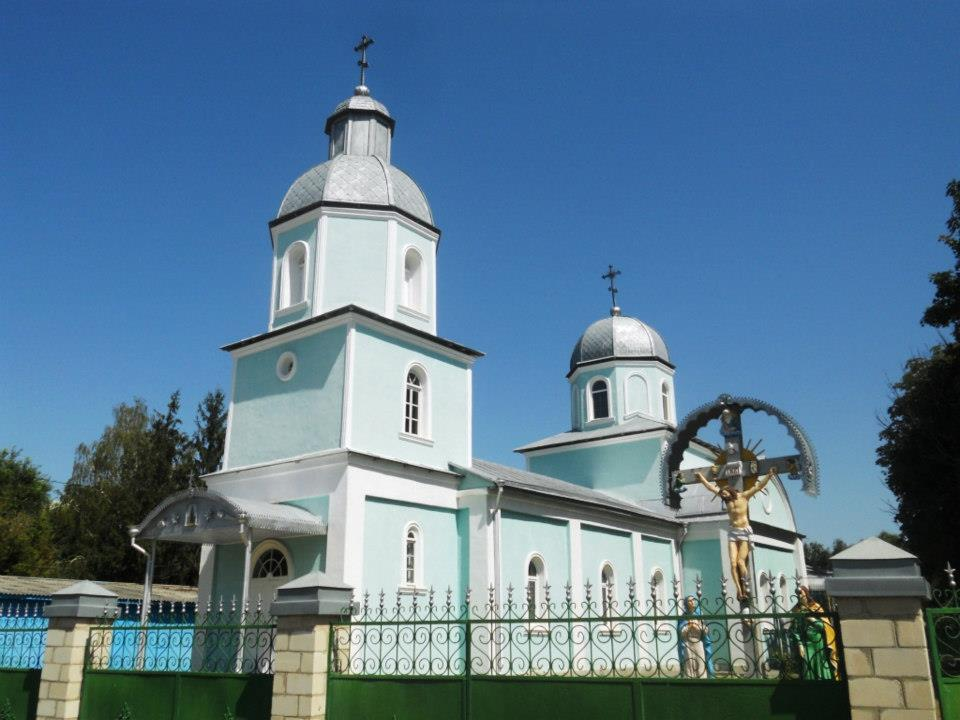
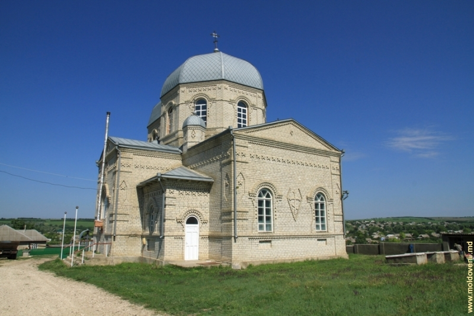
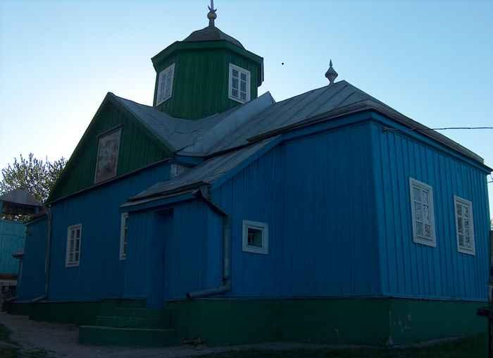
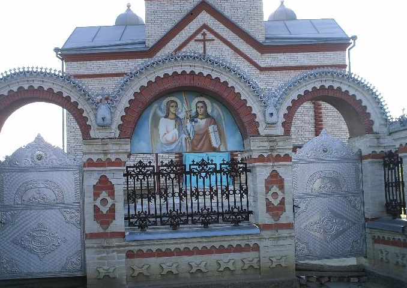
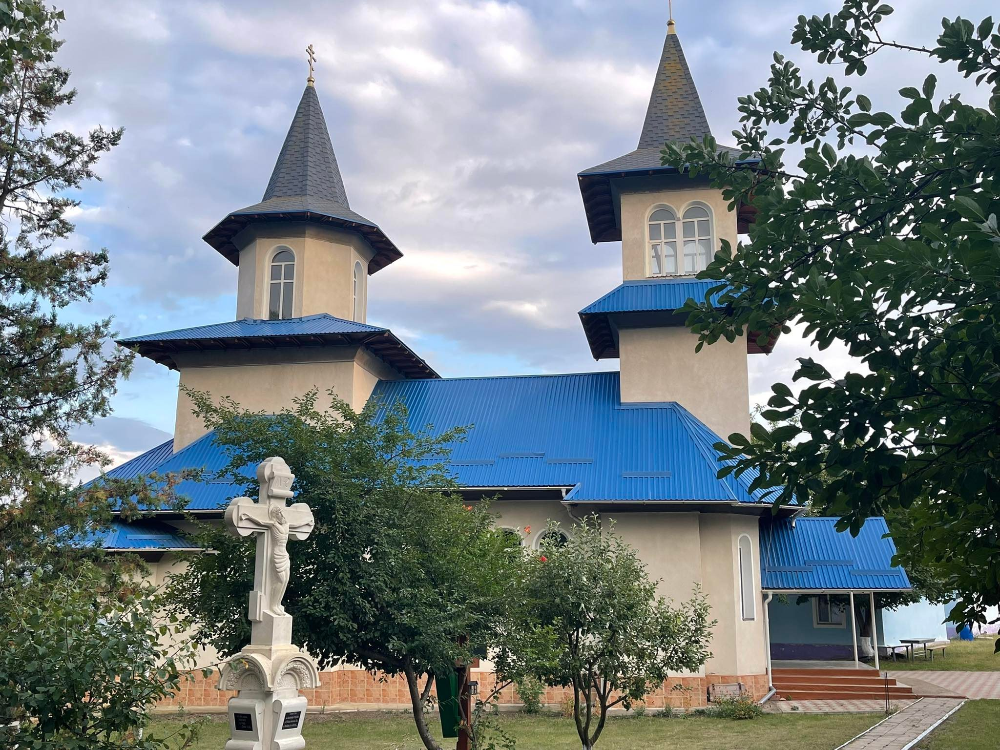
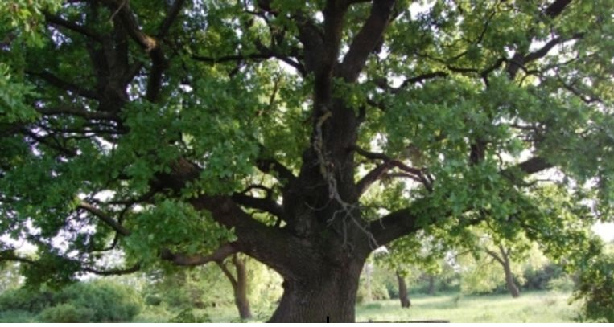

Obiective turistice-Leova
Biserica "Sf. Parascheva" oraș Leova
Biserica Sf.Parascheva se pomeneşte în acte ca o biserică din lemn. A fost zidită în anul 1818, din cărămidă; în anul 1933 a fost reconstruită, modificându-se şi planul bisericii. În 1992 – a fost reparată din nou, modificându-se puţin şi planul bisericii. Tot atunci a fost redeschisă. Până în 1885 este una din cele mai principale clădiri din oraş. E construită în formă de barcă şi are două cupole. În biserică se păstrează cele mai vechi cărţi şi anume: „Liturghia din 1915 din Chişinău”. Sf.Paraschieva este ocrotitoarea Moldovei.
Biserica "Sf. Nicolae" sat Tigheci
Biserica veche datează din 1794 şi a fost construită din lemn. În 1829 a fost reconstruită. În 1900 a fost prădată de cele mai scumpe odoare. În perioada sovietică biserica n-a funcţionat. În 1968 activiştii comunişti a s. Tigheci au dărâmat fosta biserică. La 9 iunie 1990 s-a pus prima piatră la temelia noii biserici pe locul şi după modelul bisericii vechi. Biserica e construită din cărămidă albă. E o biserică frumoasă care se vede din depărtare: înălţimea – 22 m, e construită în formă de cruce având două cupole mari şi patru mici. În biserică există icoane cu inscripţii vechi, din sec. XVIII.
Biserica "Sf. Mucenic Gheorghe" sat Covurlui
Această biserică este construită din lemn, fiind zidită în 1805, închisă în 1959 şi redeschisă în 1989. Menţionăm că în R. Moldova au mai rămas doar 7 biserici din lemn. Bătrânii afirmă că a fost ridicată de turci, dar care mai păstrează vechea tradiţie de artă românească şi acum în secolul XXI.
Biserica "Sf. Voievozi Mihail și Gavril" sat Borogani
Biserica a fost construită în 1990, la fundament e piatră din but, pe din afară e cărămidă din silicat şi în interior cărămidă roşie. În anul 1990 a fost sfinţit locul şi pusă piatra de temelie de către mitropolitul Vladimir al Moldovei, cu participarea preoţilor din Republica Moldova. Lucrările din interior şi exterior s-au finisat în anul 1994. Are 9 metri în lăţime şi 26 m în lungime. Biserica e construită în formă de corabie cu 5 cupole, unu în mijloc şi patru prin părţi. Cupola principală ţine policandrul. Din Biserica veche s-a păstrat capacul de pe „Mormântul lui Isus Hristos”. E construită în stil realistic.
Biserica „Sf. Nicolae” sat Sărățica Nouă
Biserica cu hramul „Sf. Nicolae” din satul Sărățica Nouă a fost zidită în anul 1903 din lemn. Distrusă fiind în perioada sovietică, a fost reconstruită în anul 1995 cu ajutorul comunităţii. Biserica activează din anul 1996. Pe teritoriul bisericii se găseşte „Izvorul minunilor”, a cărui apă se foloseşte atât la sfinţire cât și la tămăduire.
Monumentul istoric „Valul lui Traian”

Valul lui Traian reprezintă o fortificaţie din perioada antică târzie, atestat pentru prima dată documentar la 13 martie 1489. Valurile sunt situate în partea de sud a Republicii Moldova şi prezintă două ramificaţii principale: "de jos" şi "de sus". Valul de jos are o lungime de 126 km şi se întinde pe teritoriul Ucrainei. Valul de sus are lungimea de 138 km avându-şi graniţa între orașul Leova la vest şi satul Copanca de lângă Chiţcani la est, iar în raionul Leova începe din satul Filipeni, trece prin satul Troiţa şi urmează drumul spre raionul Cimişlia pe lângă satele Troian, Ialpugeni, Caracui şi Sărăţica Nouă. Înălţimea “Valurilor” în prezent nu depăşeşte 1,5-3 metri.“Valurile lui Traian” sunt rămăşiţele construcţiilor defensive din epoca împăratului Traian, sau linia de demarcare dintre romani şi lumea „barbară”, neromană.
Monument al naturii: Stejarul secular
Cel mai bătrân stejar din Moldova se află la Leova și crește chiar în centrul orașului de aproape patru secole. Se spune că la umbra copacului s-a odihnit domnitorul Moldovei, Dimitrie Cantemir, dar și poetul Alexandr Pușkin. Este un monument al naturii, ce datează din secolul al XVII-lea. Are o înălțime de aproape 20 de metri și se află chiar în centrul orașul Leova. Nu se știe cine l-a plantat, dar cert este că el a rezistat în fața războaielor dar și înaintea tăișului de topor. Arborele mai este numit și stejarul lui Pușkin. Și asta pentru că acum 200 de ani, aici s-a odihnit poetul când se întorcea de la sudul Moldovei. De-a lungul anilor, arborele a devenit un punct de atracție pentru turiștii din întreaga lume.